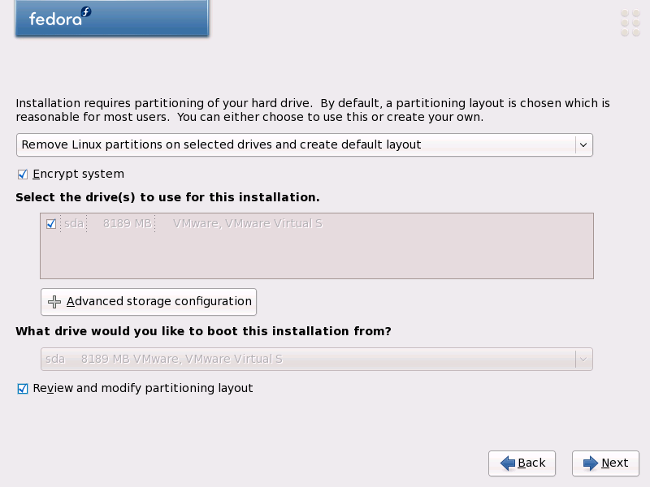
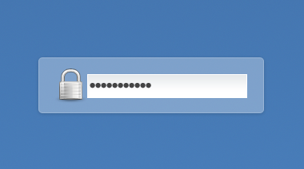

Μάθαμε όλοι τις εξελίξεις σχετικά με το κλείσιμο του gamato.info, είτε από ειδησιογραφικά sites (ακόμα και διεθνή) είτε από την επίσημη ανακοίνωση της αστυνομίας.
Δεν θα σταθώ (προς το παρόν) στο θέμα της πνευματικής ιδιοκτησίας. Είμαι θεμελιακά αντίθετος, αλλά θα αδικήσω το θέμα αν αναπτύξω τη σκέψη μου με αφορμή το κλείσιμο ενός torrent tracker. Δεν θα σταθώ ούτε στο γεγονός πως η αστυνομία με την ανακοίνωση της έγραψε στα παλιότερα των υποδημάτων της το τεκμήριο της αθωότητας, ούτε στο γεγονός πως οι τελευταίοι παράγραφοι είναι προφανές πως τις έχουν υπαγορεύσει οι εταιρίες δικαιωμάτων. Θα σταθω κυρίως στο τι ακριβώς είναι ένας torrent tracker.
Θυμίζω πως στην περιβόητη δίκη του pirate bay οι μισές κατηγορίες κατέπεσαν μόλις την δεύτερη μέρα επειδή οι κατήγοροι δεν γνώριζαν πως οι ταινίες, που μοιράζοντας οι χρήστες του συγκερκιμένου torrent tracker, δεν ήταν πάνω στο site αλλά στον δίσκο αυτών των χρηστών. Ένας torrent tracker παρέχει απλώς ένα αρχείο (.torrent) το οποίο περιέχει μεταδεδομένα που είναι απαραίτητα ώστε να γίνει αυτός ο διαμοιρασμός (πχ. το όνομα του αρχείου/ταινίας). Όποιος χρήστης έχει κατεβάσει αυτό το αρχείο γίνεται μέλος ενός "δικτύου" που μοιράζει το αρχείο που περιγράφεται απ' το .torrent αρχείο. (Παρένθεση: Οι πιο περίεργοι ας ψάξουν να βρουν πως χρησιμοποιείται και η τεχνολογία DHT στα torrents. Διαδικασία που εξηγήθηκε και στη δίκη του Pirate Bay απ' τους διαχειριστές του, και που πρακτικά στερεί απ' τον tracker ακόμα και αυτή την απλή συμμετοχή στον διαμοιρασμό των αρχείων, καθιστώντας την όλη διαδικασία πλήρως αποκεντρωμένη.) Ο torrent tracker (pirate bay, gamato.info, κλπ) δεν κατέχει λοιπόν παράνομο υλικό, συνεπώς δεν μπορεί να κατηγορηθεί για διακίνηση του. Αυτό για το οποίο θα μπορούσαν να κατηγορηθούν τέτοια sites είναι για παρακινηση και διευκόλυνση των χρηστών τους σε παράνομες δραστηριότητες. Αμφιβάλλω βέβαια κατά πόσο υπάρχει στην Ελλάδα το αντίστοιχο νομικό πλαίσιο για να στηριχθεί μια τέτοια κατηγορία. Ήδη διαβάζουμε πως στην Ισπανία είχαμε μια θετική δικαστική απόφαση σχετικά με αυτό το θέμα, που πρακτικά αθοώνει sites τύπου gamato.info με το αιτιολογικό πως πρόκειται για απλούς μεταγωγούς δεδομένων και άρα δεν καταπατούν τους νόμους περί πνευματικής ιδιοκτησίας. (Παρένθεση: Ειδικά στην υπόθεση του gamato.info έχει ενδιαφέρον να δούμε πως οι αρχές βρήκαν τις διευθύνσεις και λοιπά στοιχεία των διαχειριστών, καθώς τίθεται θέμα παραβίασης του απορρήτου των επικοινωνιών.)
Οδηγός Επιβίωσης
Με βάση το δελτίο τύπου της αστυνομίας φαίνεται πως κατασχέθηκαν οι προσωπικοί υπολογιστές των συλληφθέντων. Δύο μικρά tips ώστε να είστε σίγουροι πως ο δίσκος σας δεν θα σας "προδώσει".
- Καταρχήν χρησιμοποιείστε κρυπτογραφημένο filesystem. Η διαδικασία είναι πάρα πολύ απλή (τουλάχιστον στο Linux) και συνήθως είναι ένα απλό checkbox κατά τη διάρκεια της εγκατάστασης. Για παράδειγμα αναφέρω το Fedora Linux, που χρησιμοποιώ προσωπικά, στο οποίο ενεργοποιώντας την αντίστοιχη επιλογή στην εγκατάσταση:

Μου ζητάει κατά την εκκίνηση να βάλω το passphrase που έχω επιλέξει:

(Να θυμάστε πως το passphrase δεν είναι password. Το σημαντικό δεν είναι να είναι δύσκολο, αλλά μεγάλο. Χρησιμοποιήστε πχ. έναν στίχο από αγαπημένο σας ποίημα όχι haiku :P).
-
Αν θέλετε να εξαφανίσετε ίχνη που έχετε ήδη στον δίσκο σας και να κάνετε μια καθαρή εγκατάσταση, γράψτε καταρχήν σε ένα cdάκι ένα LiveCD. Μας κάνει και το Fedora Linux, αλλά γιατί κάτι τόσο απλό μας κάνει και κάτι σαν το slax. Ξεκίνηστε τον υπολογιστή σας μ' αυτό και όταν τελειώσει η εκκίνηση ανοίξτε ένα τερματικό και γράψτε την εντολή:
dd if=/dev/urandom of=/dev/sda
όπου sda είναι ο 1ο δίσκος, sdb ο 2ος, κοκ. Η παραπάνω διαδικασία γεμίζει με τυχαία δεδομένα τον δίσκο και είνα καλό να προηγηθεί ακόμα και αν κρυπτογραφήσετε τον δίσκο σας. Να είστε όπως προετοιμασμένοι πως θα πάρει αρκετοί ώρα (10-24h) ανάλογα με την χωρητικότητα του δίσκου.
 diaspora*
diaspora*